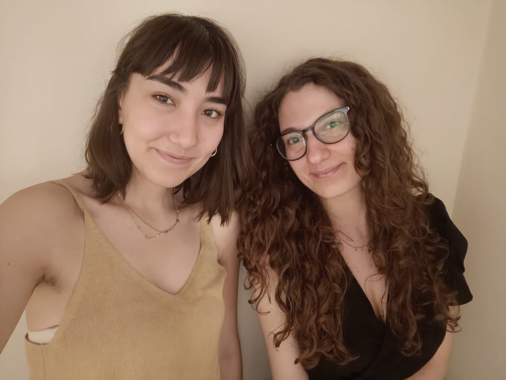

Welcome, we are Carmela Saracino and Fabiana Cei , two students at the Second cycle degree course 'Language, Society and Communication' at the University of Bologna.
Respectively from Campania and Liguria, we met in Bologna thanks to our university studies and soon discovered our common passion for Mamma Mia films and the ABBA discography by which they are inspired. Thanks to this project, we were able to deepen this interest, linking it also to the IT field through the development of queries, which are basically requests for data results from a certain database. These results were useful in the creation of a page dedicated to ABBA within the Melody platform. If you share our passion for the iconic swedish group ABBA, then you should visit our webpage and explore our project on the Melody platform!
